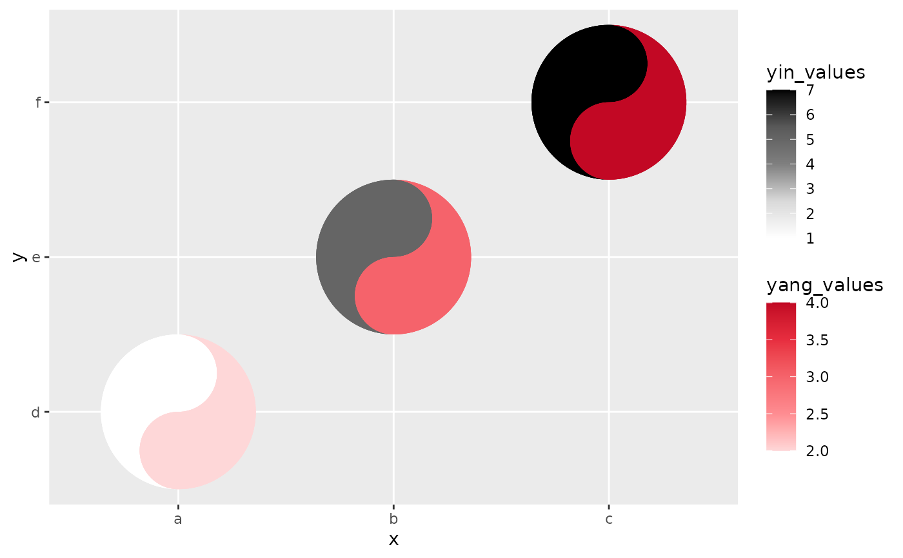
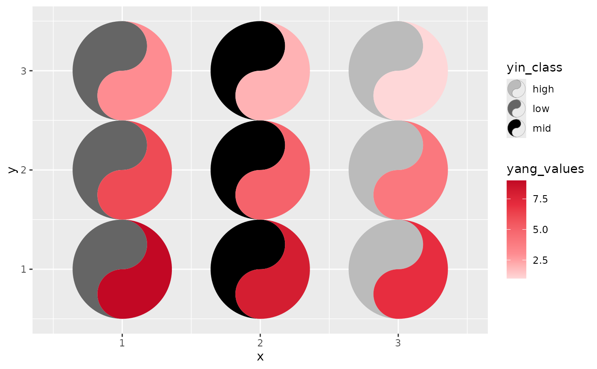
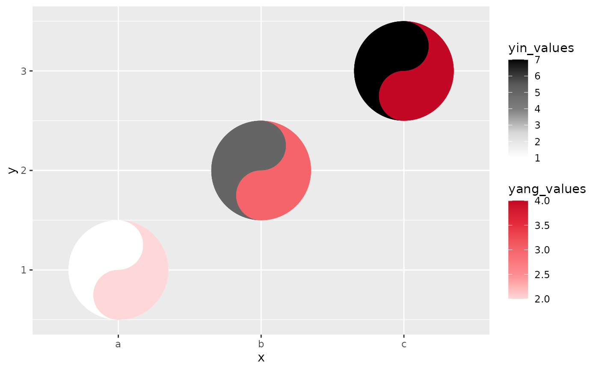

The taichi geom turns each cell of a heatmap-like grid into a taichi
(yin-yang) diagram. The two interlocking "fish" of the diagram use luminance
to show the values from two data sources on the same plot, so four
dimensions of data can be expressed at once: the x and y
position of every taichi symbol plus the yin and yang values
that fill its two halves. With the optional eyes enabled and mapped to data
(see eyes, yin_eye_size, yang_eye_size), a single glyph
can carry up to six dimensions.
Usage
geom_taichi(
yin,
yang,
yin_name = NULL,
yang_name = NULL,
yin_colors = c("gray100", "gray85", "gray50", "gray35", "gray0"),
yang_colors = c("#FED7D8", "#FE8C91", "#F5636B", "#E72D3F", "#C20824"),
yin_scale = NULL,
yang_scale = NULL,
angle = NULL,
eyes = FALSE,
yin_eye_size = 0.15,
yang_eye_size = 0.15,
yin_eye_colour = "white",
yang_eye_colour = "black",
shared_limits = FALSE,
shared_legend = FALSE,
width = NULL,
height = NULL,
alpha = NA,
na.rm = FALSE,
colour = NA,
linewidth = 0.1,
linetype = 1,
show.legend = NA,
...
)Arguments
- yin
The unquoted column name (or a string naming a column) for the yin (dark) fish of the taichi symbol.
- yang
The unquoted column name (or a string naming a column) for the yang (light) fish of the taichi symbol.
- yin_name
The label name (in quotes) for the legend of the yin rendering. Default is
NULL(uses the column name).- yang_name
The label name (in quotes) for the legend of the yang rendering. Default is
NULL(uses the column name).- yin_colors
A color vector, usually as hex codes, for the yin fish fill. Used as a gradient for continuous data and as a discrete palette for factor/character data. Ignored if
yin_scaleis provided.- yang_colors
A color vector, usually as hex codes, for the yang fish fill. Used as a gradient for continuous data and as a discrete palette for factor/character data. Ignored if
yang_scaleis provided.- yin_scale
An optional fill scale for the yin fish: either a ready scale object or a scale constructor function (e.g.
ggplot2::scale_fill_viridis_d). Overrides auto-detection.- yang_scale
An optional fill scale for the yang fish, as
yin_scale.- angle
Rotation of each glyph in degrees, counter-clockwise: either a single number or an unquoted column name (one angle per cell).
- eyes
Logical. If
TRUE, draws the classic taichi eyes (dots), each centred in its fish's head. DefaultFALSE, preserving the plain v0.1.0 look.- yin_eye_size, yang_eye_size
Size of each eye as a proportion of the glyph radius: a constant (default 0.15) or an unquoted data column to encode a variable (see the Eyes section for the rescaling rule).
- yin_eye_colour, yang_eye_colour
Colour of each eye dot: a constant (defaults "white" and "black") or an unquoted data column containing colour strings.
If
TRUEand both sources are of the same type (both continuous, or both discrete), the two auto-built fill scales share common limits — the union range (or union of levels) ofyinandyang— so equal values read as equal ink. Explicitlimitspassed through...take precedence. DefaultFALSE.If
TRUE, treats the two sources as directly comparable: impliesshared_limits = TRUE, paints both fish withyin_colors, and shows a single legend (the yang guide is dropped). Unlessyin_nameis supplied, the legend is titled "yin/yang". Ignored when customyin_scale/yang_scaleare given. DefaultFALSE.- width, height
Width and height of each cell. Typically omitted.
- alpha
Alpha transparency for the fish fills.
- na.rm
If
TRUE, silently removes rows with missing values.- colour
Outline colour of the fish.
- linewidth
Outline width of the fish (in mm). Replaces the deprecated
sizeaesthetic of ggtaichi 0.1.0.- linetype
Outline linetype of the fish.
- show.legend
Logical. Should the layer be included in the legend?
- ...
Additional arguments passed to both auto-built fill scales (e.g., shared
limitsorna.value). For per-fish scale options, supplyyin_scale/yang_scaleinstead.
Discrete and continuous fills
geom_taichi() inspects the plot data at + time. A numeric
yin / yang column gets a continuous
scale_fill_gradientn built from yin_colors /
yang_colors; a factor, character, or logical column (including
computed expressions such as factor(week)) gets a discrete
scale_fill_manual whose palette is interpolated from
the same color vectors. With the default vectors the discrete palette skips
the palest end of the ramp so that no category is invisible on a white
panel; an explicitly supplied color vector is used as-is. Supply
yin_scale / yang_scale to override the automatic choice
entirely.
Eyes
eyes = TRUE draws the classic taichi dots, each sitting in its own
fish's head: the yin eye in the top bulb, the yang eye in the bottom bulb.
The size and colour arguments accept either a constant or an (unquoted)
data column, so the eyes can encode up to two further variables. A mapped
eye-size column is rescaled to radii between 0.05 and 0.3 of the glyph
radius, unless all its values already lie in (0, 0.5], in which case
they are used directly as radius proportions. Cells whose eye size is
NA or 0 are drawn without an eye.
Missing values
A fish whose fill value is NA is painted in the scale's
na.value colour (pass e.g. na.value = "transparent" through
... to change it), while na.rm = TRUE silently drops rows
with missing positions.
Examples
library(ggplot2)
# taichi with numeric fills
data <- data.frame(x = rep(c(1, 2, 3), 3),
y = rep(c(1, 2, 3), each = 3),
yin_values = 1:9,
yang_values = 9:1)
ggplot(data, aes(x, y)) +
geom_taichi(yin = yin_values,
yang = yang_values)

# categorical (discrete) fills are detected automatically
data$yin_class <- rep(c("low", "mid", "high"), 3)
ggplot(data, aes(x, y)) +
geom_taichi(yin = yin_class,
yang = yang_values)

# classic eyes, rotation, and data-driven eye sizes
ggplot(data, aes(x, y)) +
geom_taichi(yin = yin_values,
yang = yang_values,
eyes = TRUE,
yin_eye_size = yang_values,
angle = 45)
